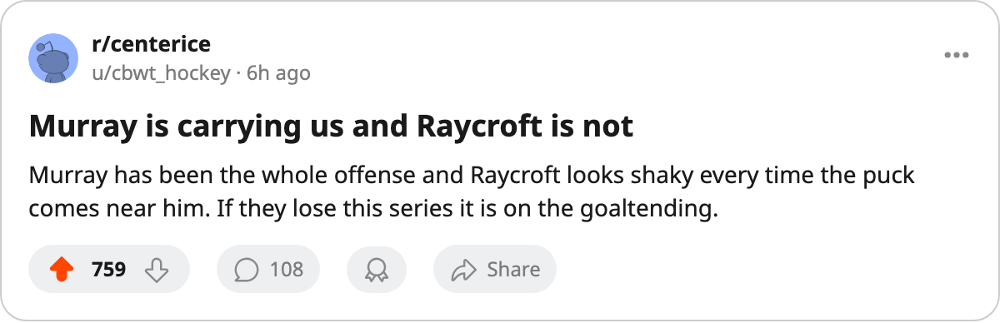

SERIES REPORT: Boston 1, Tampa Bay 1 -- Murray's 7 points carry the Bruins home
The Bruins have the series level and Game 3 tonight, with their top line producing and their goaltender not.
 Ray CallumSenior correspondent · Home Ice Network
Ray CallumSenior correspondent · Home Ice Network Glen Murray86 has 7 points in two games and the first-round series between
Glen Murray86 has 7 points in two games and the first-round series between  Boston Bruins and
Boston Bruins and  Tampa Bay Lightning is level at 1-1. Game 3 is tonight in Boston.
Tampa Bay Lightning is level at 1-1. Game 3 is tonight in Boston.
Tampa Bay won the opener 3-2 on April 8, and Boston answered with a 5-3 win on April 10. Murray has 3 goals and 4 assists across the two.  Mike Knuble75 has 2 goals and 3 assists,
Mike Knuble75 has 2 goals and 3 assists,  Joe Thornton89 2 and 2,
Joe Thornton89 2 and 2,  Nick Boynton73 one assist.
Nick Boynton73 one assist.
Tampa Bay's answer is  Cory Stillman86, who has 4 goals in the two games. Dave Andreychuk has 3 assists, Bill Lindsay73 a goal and an assist,
Cory Stillman86, who has 4 goals in the two games. Dave Andreychuk has 3 assists, Bill Lindsay73 a goal and an assist,  Dan Boyle82 2 assists.
Dan Boyle82 2 assists.
 Andrew Raycroft87 has a 3.00 goals-against and a .850 save percentage for Boston;
Andrew Raycroft87 has a 3.00 goals-against and a .850 save percentage for Boston;  Nikolai Khabibulin91 has a 3.50 goals-against and a .865 save percentage for Tampa Bay. Raycroft has had 10 injury spells this season.
Nikolai Khabibulin91 has a 3.50 goals-against and a .865 save percentage for Tampa Bay. Raycroft has had 10 injury spells this season.
The Lightning went 3-1-2 against Boston in the regular season, and four of the six meetings were one-goal games. Boston finished 33-29-9 with 97 points, sixth in the East; Tampa Bay finished 39-25-7 with 107 points and third.
Boston gets Game 3 tonight and Game 4 on April 14, both at home. The Bruins need the goaltending to match the top line, or the series swings back to Tampa Bay with Murray's scoring as the only thing holding it up.
